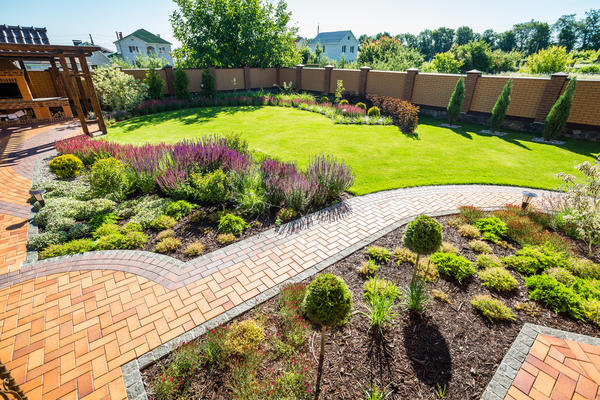

Ландшафтный дизайн

Ландша́фтный дизайн, ландшафтная архитектура — искусство, находящееся на стыке трёх направлений: с одной
стороны, архитектуры, строительства и проектирования (инженерный аспект), с другой стороны, ботаники и
растениеводства (биологический аспект) и, с третьей стороны, в ландшафтном дизайне используются сведения
из истории (особенно из истории культуры) и философии[1]. Кроме того, ландшафтным дизайном называют
практические действия по озеленению и благоустройству территорий.